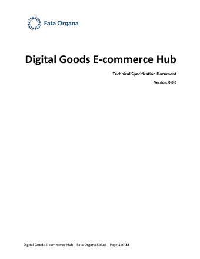
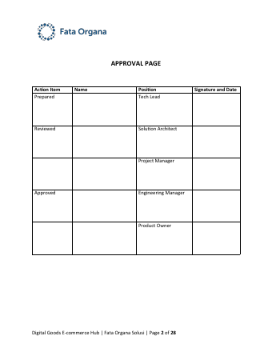
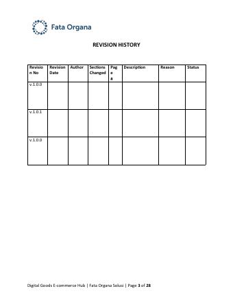
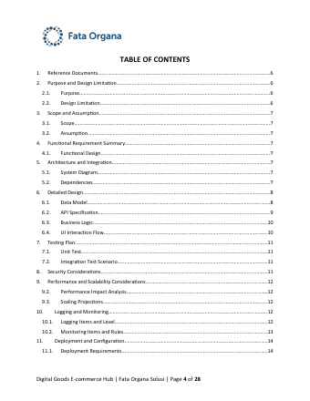
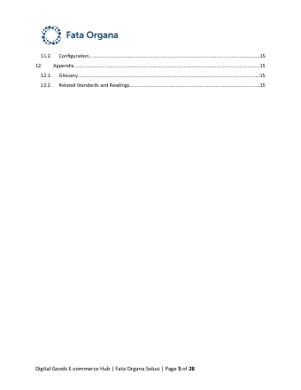
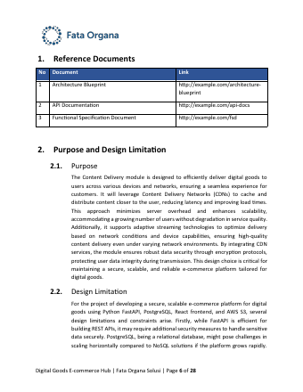
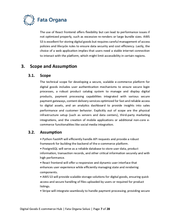
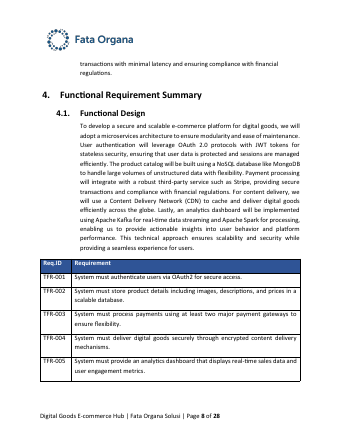

Case study 04 · Fata Organa
Spec Generator
Turns a short project brief into a full technical spec in the company’s Word template, using local LLMs.
- Role
- AI Engineer Intern (remote)
- Where
- Fata Organa
- When
- Jul – Sep 2025
- Stack
- FastAPI, LangChain, Ollama, docxtpl
~29pages per spec
12sections, one prompt each
2document types: technical and functional
What I did
- Built a FastAPI service that takes a brief (goal, features, tech stack) and writes the whole document.
- Gave each of the 12 sections its own prompt (architecture, API, data model, tests, security and so on), then cleaned the output and filled the company’s Word template with docxtpl.
- Ran it on local models through Ollama, so client requirements stay on company machines.
- Tested it with other AI engineers and a few divisions to make sure the documents fit how they work.







